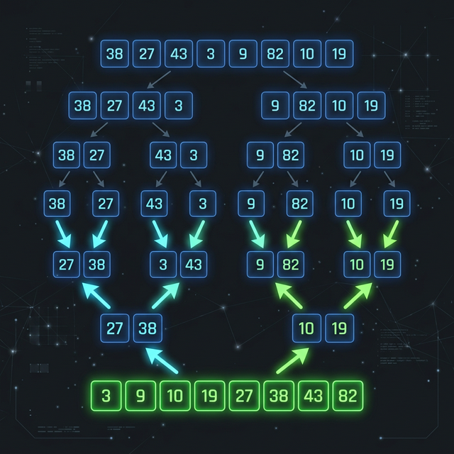

Merge Sort
Merge Sort is an efficient, general-purpose, comparison-based sorting algorithm. Most implementations produce a stable sort. It is a divide-and-conquer algorithm that was invented by John von Neumann in 1945.
The algorithm recursively divides the list into halves, sorts those halves, and then merges them back together. Because of its reliable O(N log N) performance, it is often used as the default sorting algorithm in many standard language libraries.

Complexity
| Best Time | Average Time | Worst Time | Space |
|---|---|---|---|
| O(N log N) | O(N log N) | O(N log N) | O(N) |
How It Works (Step-by-Step)
- Divide: Divide the unsorted list into n sublists, each containing one element (a list of one element is considered sorted).
- Conquer: Repeatedly merge sublists to produce new sorted sublists until there is only one sorted list remaining. This will be the sorted list.
- When merging two sublists, compare the first element of both sublists. Take the smaller of the two and place it into the new merged array.
- Repeat this comparison until one sublist is empty, then append the remaining elements of the other sublist to the merged array.